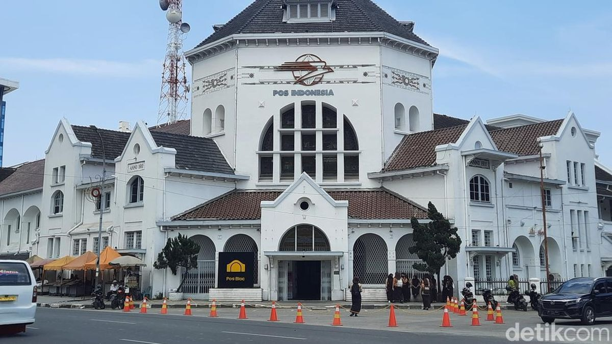

MEDAN
Medan is the capital of the province of North Sumatra, Indonesia. This city is the third largest city in Indonesia after DKI Jakarta and Surabaya and the largest city outside Java, as well as the largest on the island of Sumatra. Medan City is the gateway to western Indonesia with the presence of Belawan Port and Kualanamu International Airport which is the second largest airport in Indonesia. Access from the city center to the port and airport is provided by toll roads and trains. Medan is the first city in Indonesia to integrate an airport with a train. Bordering the Strait of Malacca, Medan is a very important trade, industrial and business city in Indonesia. In 2022, Medan City will have a population of 2,494,512 people, with a population density of 9,413 people/km2
K o t a
M e d a n
M e d a n